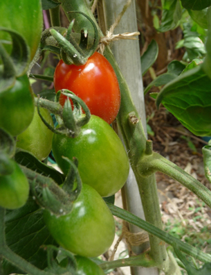
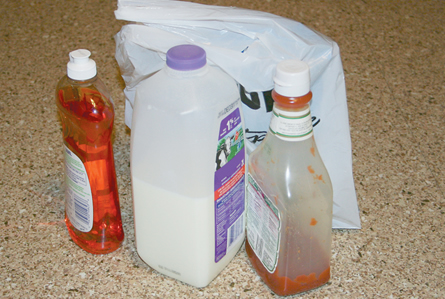

Module 5—Hydrocarbons and the Petroleum Industry
 Reflect and Connect
Reflect and Connect

© 2009 Jupiterimages Corporation
The fruit production industry has taken advantage of the ethene that is naturally produced by plants to better prepare fruits and vegetables for shipment, storage, and sale. By controlling the concentration of ethene around produce, the ripening process can be delayed or stimulated as required.
Inspection of produce prior to shipment is very important, because damaged fruits and vegetables produce more ethene. If damaged produce is not removed, it may be a case of one bad apple spoiling the whole bunch!
To promote ripening at home, some people place ethene-producing fruits, like bananas, peaches, pears, and nectarines, in bags with produce that is more sensitive to ethene, such as broccoli, leafy green vegetables, tomatoes, and mangos.
Reflect on the Big Picture

In this lesson you learned that cracking reactions are used to dehydrogenate ethane extracted from natural gas. You also learned that ethene can also be produced from larger hydrocarbons extracted from other petroleum sources. In Module 6 you will learn more about reactions that use ethene, including the process used to convert ethene into plastic.
Look around the room in which you are sitting. Do you see many products made from plastic? These products are evidence of the importance of ethene and of this class of hydrocarbons.
 Module 5: Lesson 3 Assignment
Module 5: Lesson 3 Assignment
Submit your completed Module 5: Lesson 3 Assignment to your teacher.